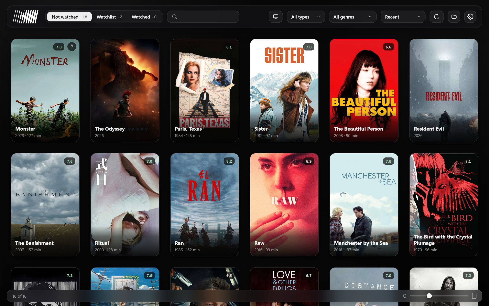
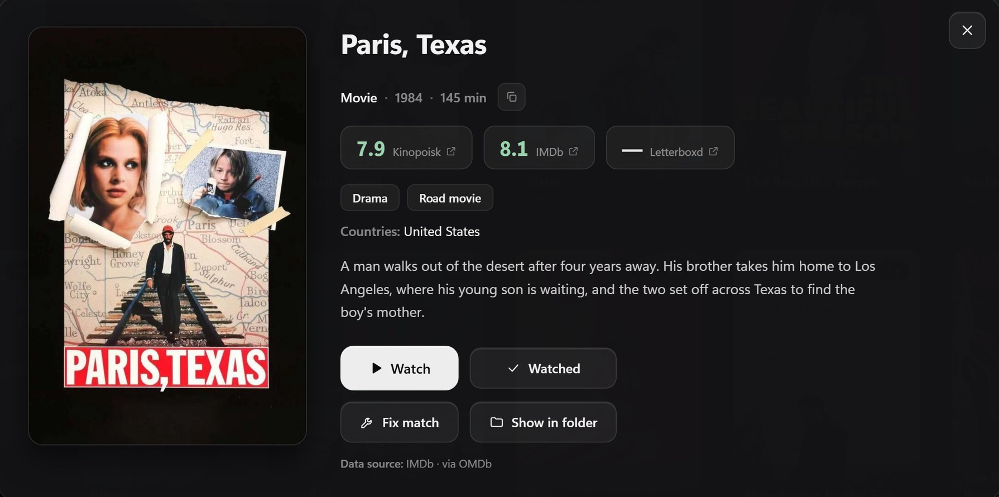

Папки с фильмами стали библиотекой.
Kino превращает фильмы на компьютере в каталог с постерами и рейтингами.

Он знает, что у вас есть.
Kino читает имена файлов, убирает теги релизов и находит каждый фильм: постер, год, жанры и описание на вашем языке. Неверное совпадение исправляется одним кликом.

Начните на компьютере. Досмотрите на диване.
- Включите Доступ с телевизора в настройках Kino.
- Установите kino.apk на Android TV или телефон.
- Выберите компьютер, аудио и субтитры и продолжайте с места остановки.
Библиотека с собой, из любой сети.
В Kino встроен клиент AmneziaWG: подключайтесь к домашнему компьютеру из другого города. Выберите файл .conf из Amnezia или вставьте его текстом. Отдельное приложение не нужно.
Мелочи, которые держат порядок.
- Вотчлист
- Добавляйте фильмы по названию или заберите весь список из Letterboxd.
- Другой компьютер
- Откройте библиотеку второго компьютера в сети или через VPN.
Бесплатно.
У Kino открытый код. Ваши файлы не покидают компьютер.